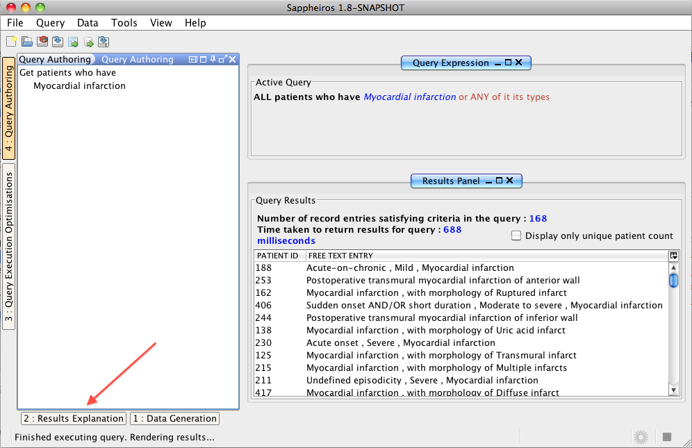
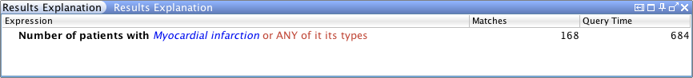
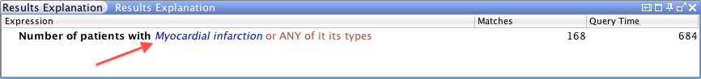
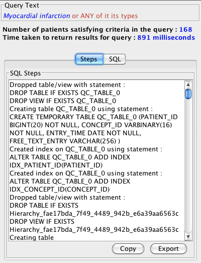

SNOMED CT, Java and MySQL are registered trademarks
This task describes the steps for displaying explanations for the results returned, following successful execution of a query. For more information on explaining results returned by Snofyre, please refer to Explaining Results.

This displays the previously minimised Results Explanation Panel as shown in the figure below.


This displays as dialog that shows all the SQL statements used to generate the results of the query, as shown in the figure below.
